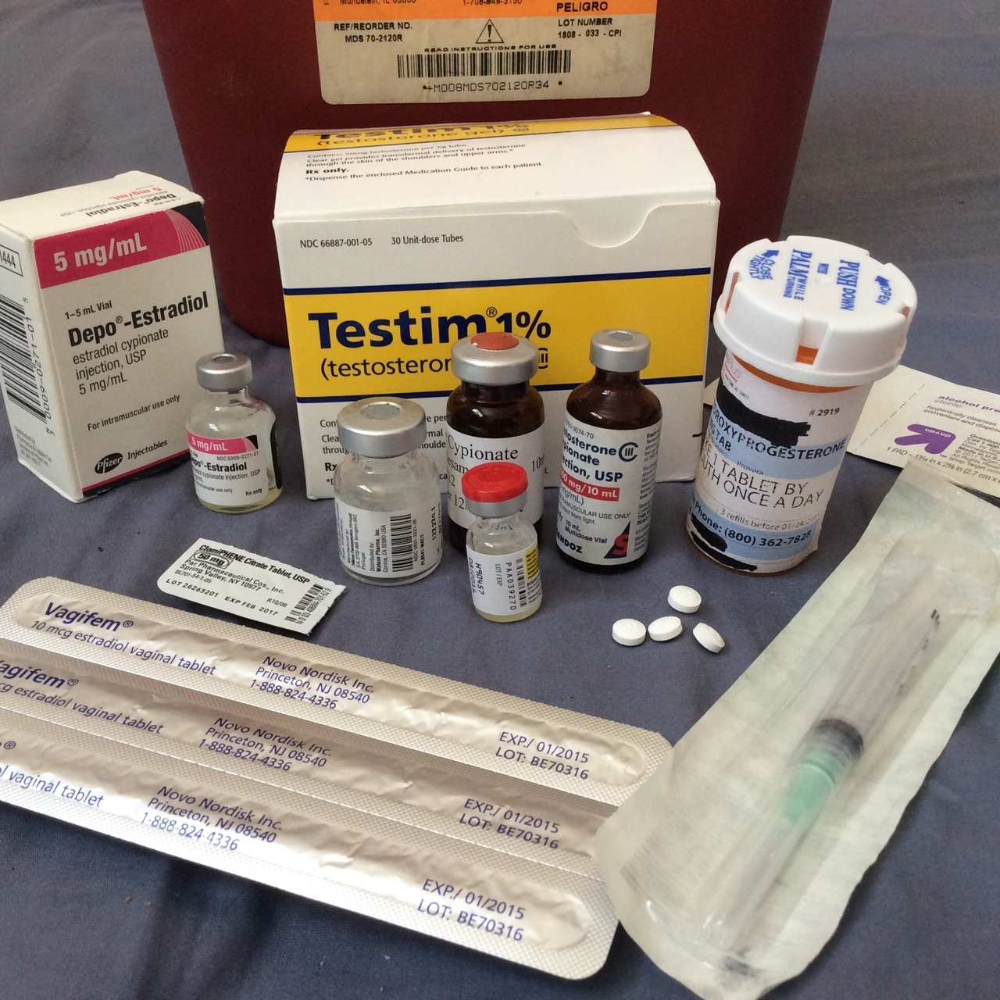
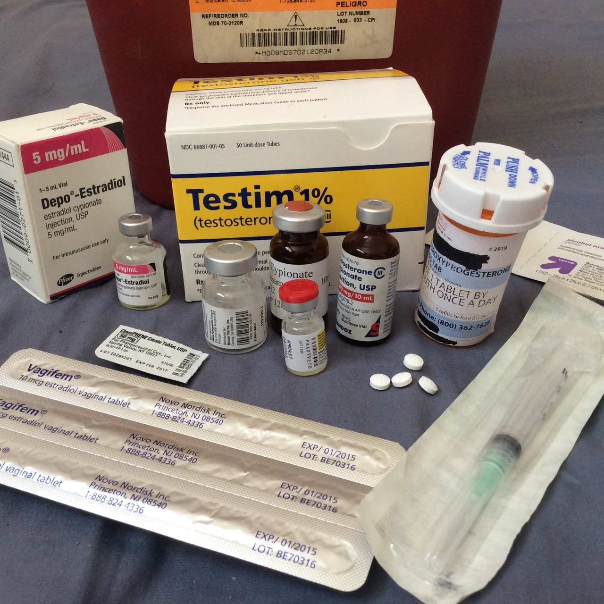
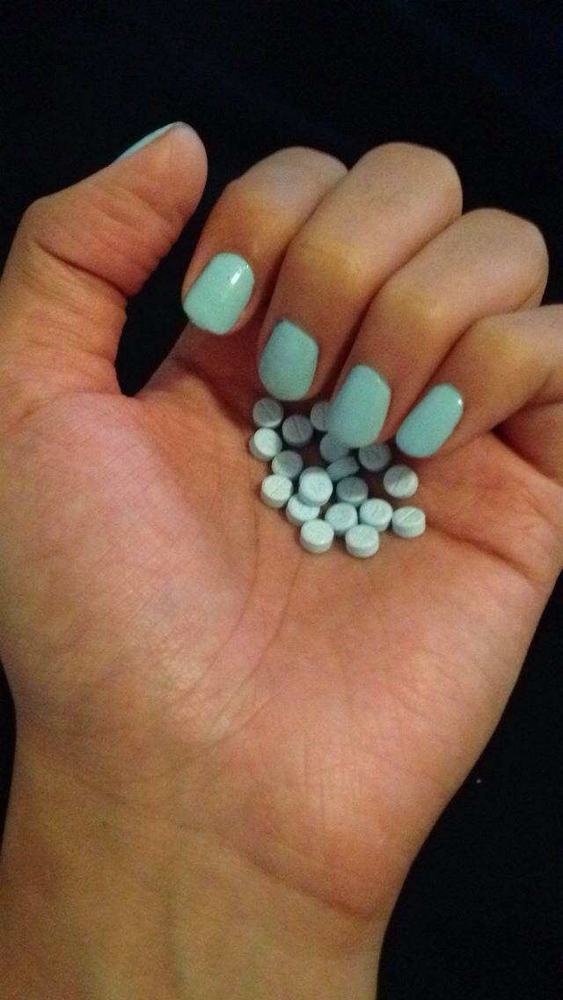
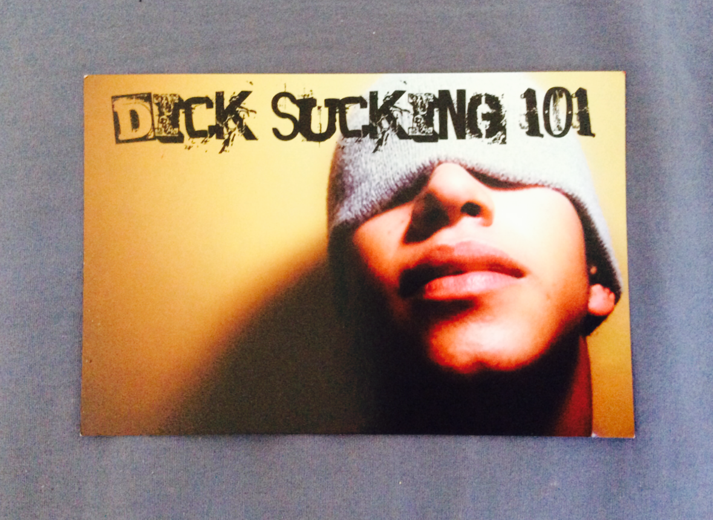

between me & my boyfriend, we have like every transsexual hormone

between me & my boyfriend, we have like every transsexual hormone

initially i thought this was a handful of valium they are exact same shape and color and frankly one kind of necessitates the other IMHOEstrogen colored nails.
GORGEOUS!!!

something else i picked up at ye olde gay megaplex yesterday
[insert your own joke here]
——- —– feeling drained 11 mins · Unbelievable that my program, which serves transwomen and men who have sex with men, is being threatened with boycott because one if my referral sources found out I go to fest. Deeply hurt and disappointed. Not sure how to process this. Tired of being in the closet about going to fest just to protect my damn job.
To clarify, PartyBottom is on professional & casual conversational terms with this guy. His deal is that he is some kind of trans guy (?) – let’s just say he very much “passes” as male, “performs” male in his daily life and work, has a visible tattoo that says “BOY,” and (I would venture to say) generally is perceived as male probably 98.8% of the time. He works at a center which, in their branding, and on their website, serves many HIV+ clients, including “trans women and men who have sex with men,” in one breath, populations that have historically been blurred together, often to the detriment of trans women’s ability to access services.
BUT WAIT, THERE’S MORE: the deal with this guy is that for two weeks a year, he goes by “she,” in order to go to the Michigan Womyn’s Music Festival. And works with trans women and gay dudes the rest of the year.
Now, PartyBottom has gone on record as Officially Done With Caring About Michfest, but when it starts FUXXING WITH MY AIDS SERVICES, THAT’S WHEN I GET MAD, OK?
AND, TO CONTINUE: just the other day, I was in a meeting at the New York City Department of Health with this guy, a “community outreach session” designed to develop a public health campaign in New York around PrEP, the HIV pre-exposure prophylaxis, which has had much media coverage as of late (Google it if you don’t know what I’m talking about.)
There are a million reasons why this “community outreach session” was not in fact a “community outreach session,” but instead just a dog-and-pony show so the DoH could say it did its due diligence by being in touch with the people or whatever, but those reasons are boring and typical: it was at 9am on a Monday morning, in some faceless office building in the financial district, with high security where you had to show ID (hello excluding many trans and undocumented people) and THERE WAS NO DAMN COFFEE – but that brings us to the meat of the thing: it really kind of went downhill from there, if you can believe it.
PS: PartyBottom, always the intrepid journalist, was one of two people in the room who were not affiliated with some kind of heavyweight professionalized organization, or historicized activist group.
(This is wrapping back around, trust me, stay with me here.)
The first panel of the morning was on “Populations That Have Traditionally Received HIV Outreach: Men Who Have Sex With Men, Men of Color, and Trans Women.
Okay, this is all well and good, but when it comes to the specificity of trans women’s needs and their inclusion on this particular panel (or, as you’re about to discover, non-inclusion)… See first paragraph, insert frowny face. Even one cisgender women in the room who admitted she’d learned everything she knew about the transgender community from RuPaul’s Drag Race was like, Wait. I don’t get it. Why are we talking about trans women on this panel? They’re women. Moreover, PB would vehemently contest the claim that it is easy for trans women to find trans-specific information about HIV, especially around PrEP. In the initial research presented at the meeting, we learned that of all the PrEP campaigns designed so far in North America (about 50, if PB is not mistaken), two – TWO – are aimed at trans women.
As far as the discussion on men who have sex with men went, it was an extremely sophisticated and nuanced conversation. Many concrete suggestions were made: why not, for example, instead of translating pre-designed campaigns for English-speakers into Spanish, hire people whose primary language is Spanish to design campaigns? Why not start thinking of HIV less as a binary (positive-versus-negative) and more of a continuum? (HIV undiagnosed, HIV diagnosed, HIV on meds, HIV undetectable, HIV negative, HIV negative and on PrEP, HIV status unknown, etc etc etc) which absolutely reflects more the reality HIV/AIDS in the US today? Why not, instead of talking about "safe” sex only in terms of condoms and seropositivity, we start talking about harm reduction sex, including the myriad mindful and careful ways people explore their sexuality in a world where HIV still exists, both with and without condoms and PrEP? What are the intersections of social justice and HIV – you know what really causes HIV? Not lack of condoms, not lack of access to PrEP: racism, sexism, poverty and homophobia, that’s what.
These are some serious thinkers, here in this room. People who are extremely careful with language.
And then, (sad trombone), it was tokenization time. “Well, we were going to invite this awesome trans woman to talk about PrEP, but she couldn’t make it, and then we tried to invite this other awesome trans woman to talk about HIV, but she couldn’t make it.” Since PB had been the only person to identify herself as both transgender and HIV+ in the room (THE MICHFEST DUDE HAD NOT IDENTIFIED HIMSELF AS TRANSGENDER IN THE INITIAL GO-AROUND) she was called upon to, were she so inclined, speak on behalf of ALL TRANS WOMEN’S CONCERNS RE: PrEP.
Fortunately, PB had been taking notes the whole time and is pretty good at public speaking ex tempore. I went up to the mic and gave a little speech on the fly, which, to be honest, could make up an entire other post (and probably will.) Unfortunately, THIS WHOLE DEBAUCLE WAS UNFORTUNATE, AND WENT ON TO BECOME MORE UNFORTUNATE.
Because the next panel, “Under-Represented Populations: Women and Undocumented People” started out with a big ole slap in the face. As the panel was introduced, it was made clear by the moderator that in this case we were talking about cisgender women. Then, a brief discussion ensued on the meaning of cisgender, since about half the people in this highly educated room had not heard of it. (Like, you know the guys from that Academy Award nominated documentary, How To Survive a Plague? One of those guys was there.) It was that kind of crowd.
Then, the panel starts with a (white) woman, who started out her speech: “Yeah, well I guess I’m here to represent ALL WOMEN on this panel. I don’t know about all this cisgender stuff. I will tell you right now, I think that word is stupid. I don’t work with cisgender women, I just work with women. Period.”
Now, look. It is the opinion of PartyBottom, Inc., that language wars around contemporary trans discourse in the last six months have probably done more to alienate intergenerational communities and individual people from each other than to unite them, which is probably a bad thing; moreover, go ahead, call PartyBottom a tranny, a shemale, a he-she, a shim – whatever slur you can think of: it will probably hurt my feelings and I will be annoyed with you, but at the end of the day I know who and what I am and no one can take that away from me. That said, whom I allow to call me any particular slur/term-of-endearment (and yes, they can be the same, but often are not ) depends largely on my personal level of intimacy with the speaker. Also, I think “cisgender” is a very useful word, though I don’t always use it when I’m talking to people who are, ah, a little naive about current trans issues – it all depends on context.
BUT (and this is a big “but,” since context is what we’re talking about here) we were in a room full of people who were there to design communication, and thus had up until that point been extremely careful and nuanced about language. And I mean, in that atmosphere, where everyone is going as far out of their way as possible to not step on each others’ toes, it felt like a slap in the face to be told that naming a hegemonic group that has historically oppressed trans people is just “stupid.”
I raised my hand. I politely objected. I asked for the mic. She kept talking, and steamrolled over me. So I left.
I got up, and walked out of the room.
A couple of nice people came chasing after me, including a nice gay dude who said, (verbatim quote) “Don’t let her get you down, please come back in, girl, you just got hit with the stigma stick!” and another woman who was there on behalf of an organization of people of color living with HIV and was equally annoyed with this woman’s tone, said to me, “Look, for one thing, that woman up there does not represent all women, and for another, you need to be in that room. Your voice needs to be in that room.”
You know who did not come out in a gesture of solidarity? MICHFEST TRANS DUDE, THAT’S WHO.
But I just couldn’t take it. I was hungry, I was tired, I was emotionally and intellectually exhausted. I went to the bathroom. I cried.
Then, I snuck out of the building, via the service elevator.
I guess this is why PartyBottom makes a better writer than an activist, huh?
I felt terrible afterward. Just another hysterical trans woman, storming out of the meeting in tears after one off-hand remark. Like I had not just let down myself, but all trans women with HIV.
As I understand it, later in the meeting there was some resolution around this stuff, and I was contacted later by the DoH and someone from TAG (the Treatment Action Group, historically a very very big deal in HIV research and treatment) so this story is still ongoing. More as it develops.
But the reason I tell it is to illustrate how trans women are systematically shut out of the process of decision-making around HIV prevention and education, and how, sometimes, trans men are complicit in this. ESPECIALLY WHEN THEY GO TO MICHFEST.
I don’t want this guy to lose his job. I don’t want his organization to suffer – they do good work. I want him to take some accountability, and to clean up his act, and to maybe stop supporting an ancient bastion of transmisogyny on his summer vacation. I mean, whatever.
BUT, REMEMBER: I told you this was the story of two HIV social worker stories. Remember, PartyBottom is about BYOPMA: Bring Your Own Positive Mental Attitude.
Today I went for some benefits counseling at the granddaddy of ‘em all, the most stately and centurion and (perhaps ill-managed, if you read the papers) HIV service org in New York. And, I waited two hours to see a counselor there. But it was SO WORTH IT.
First off, when the receptionist told me who I was going to be seeing, I was shocked. She’s still here??, I asked incredulously. After dealing with constant, unending turnover in HIV service nonprofits, it was so refreshing to walk into an org that has changed locations, and, five years later, retained the same awesome staff member.
And she was just so awesome. She has always been so awesome. Organizations can sometimes be fucked, but at the end of the day, organizations are just made up of people, and this particular worker is very, very good people. (She has an autographed photo of Mae West by her desk, given to her by a client. When your clients like you that much, that’s usually a pretty good sign.)
I have a feeling – I don’t know this for sure, but I get the sense that she has been working there for well over 20 years. She knows her shit. I was asking about some health insurance questions (specifically, some creative ways to perhaps get around the Medicaid exclusion for trans surgery in New York – she didn’t blink an eye or skip a beat about this), and she had all the information I needed (and then some), and was charming, witty and funny, all at exactly the right times and maintaining the exact right tone throughout the entire interaction.
I noticed she happened to have a copy of Trans Bodies, Trans Selves on her desk. As we left, I mentioned I needed to use the bathroom and she was like, Okay, the women’s room is kind of schlep – it’s way down the hall past the stairs to the right. We really are working on getting gender neutral facilities. I was like, oh, don’t worry, it’s no big deal – like, I don’t mind finding the bathroom on my own – but she was like, look, to some people it is a very big deal, with this tone in her voice that to me indicated 1) it sucks that women who come there often have mobility or breathing difficulties due to illnesses associated with HIV, and having to make a long walk to find the bathroom, and 2) that she realizes that gender neutral restrooms are essential to serve a variety of transgender clients, not to mention families and all the other people that single-stall restrooms serve.
By-the-by, it came up very naturally in the conversation that she had been married to a man for a very long time, so, I’m guessing – and of course I could be off the mark here – she identifies as a straight, cisgender woman. POINT: solidarity is an act, a series of acts, a lifetime of choices and self-education, a deeply felt human compassion, NOT a button on your goddamn denim vest. Or, even really a matter of identity, when it comes right down to it.
The point is, She knows not only the theory of how the VAST, ENORMOUS HIV bureaucracy operates in New York, but how it plays out in practice. She knows all the ins and outs of everything, because this is work she has dedicated her life to. She was, frankly, the picture of competence.
When I am her age, she is who I want to be. God bless her.
WAAAAAAY TL;DR – When it comes to trans women and HIV, there are lots of young trans dudes out there who Totally Don’t Get It, and there are lots of people (straight people even!) who have been around since this virus caught fire who do, and I am grateful to them every single day.
Lord, lord, lord. I came precariously close to disaster in the last 48 hours.
On Tuesday, I got a call from my government case worker, saying she wanted to do a home visit. I immediately knew what it was about. When she showed up the next day, the first words out of her mouth were, “You’ve been bad. If you don’t comply with Social Security, we will close your case in ten days.”
“Closing my case” would leave me homeless, without food or HIV drugs, and probably dead within a year.
As I have previously mentioned on this blog, I am enrolled in a program called HASA. “HASA” stands for New York City’s HIV/AIDS Services Administration, and it is a division of New York City’s Human Resources Administration, known as HRA, or more commonly, “the welfare office.”
HASA provides you with a standard of living which is well below the poverty line. It allocates you with a few basic things: often sub-par health care, food stamps, a very modest cash grant each month (very modest — so you can buy, like, toothpaste and toilet paper), and a small shelter stipend.
Most people who receive that shelter stipend live in SROs, which are single-room-occupancy dwellings, or, more colloquially, “group homes.” These are not nice places. There is very little state oversight for disability housing. Violence, vermin, intimidation and abuse are quite common.
Here’s the thing: HASA is a municipal program, run by the city of New York. Of course, this costs money (not that much money in the grand scheme of things, but that’s a whole other post). HRA would much rather foist off its clients (or, as we’re referred to, “consumers”) to the federal government.
Thus, every HASA client is required by law to apply for Social Security Insurance/Social Security Disability Insurance (or SSI/SSDI). These are national programs that provide, basically, the shittiest social safety net for some of the most vulnerable people in the US: the elderly, the disabled, and poor kids.
The problem with SSI/SSDI is that it’s almost impossible to qualify for unless you’re over 65 (and even that may change soon.) To be considered “disabled” by Social Security, you more-or-less have to be blind and deaf and have no arms or legs or something. Only a tiny fraction of the people who apply are accepted to the program.
(Caveat: the above statement is circumstantially hyperbolic. There is a way to qualify for SSI/SSDI, and that is to get a good lawyer to handle your case. And, surprisingly, the lawyers that advertise on daytime television during Judge Judy do an exceptionally good job at winning these cases.)
So, I have to apply for SSDI. I will not get accepted for SSDI. I know this, my case worker knows this, and HRA knows this. But I am required to act *as if* it is a possibility that I will be accepted.
The process of applying for SSDI is pretty humiliating. You schedule an interview, wait for two months, and go in and talk to a stranger about your entire life history and all your problems. Then, you have to get your doctor to fill out a medical report confirming your medical problems (this in and of itself is difficult, as I see a public health physician who has 600 patients.)
Then, you are required to be examined by two creepy state-appointed doctors, which (speaking particularly as a transgender person who is shy about strangers touching and seeing my body), is really ramps up that “humiliating” factor.
Then, you will receive a decision letter from SSDI. You will be inevitably denied. Then you have to file an appeal, and appear in front of a judge (*another* incredibly anxiety-producing experience, especially for people who have been formerly incarcerated, had bad experiences with family court, who have outstanding warrants, you name it — and these folks, perhaps not unsurprisingly, make up a large chunk of people living with HIV in the US).
Then, the judge will take one look at you, and will reject your case. This entire process, of course, is big waste of many, many people’s time.
But you know what’s the most cynical, depraved part of the whole cycle? Once you are denied, you have to start the process all over again. Because somehow, they magically hope that you will get approved next time? In fact, the city is kind of hoping that your health will deteriorate to the point where they can kick you out of their programs and make you the federal government’s problem.
HERE IS THE KICKER, THOUGH: EVERYBODY KNOWS THIS ENTIRE PROCESS IS A COMPLETE JOKE. Even my worker says, look, it’s just a game, and you gotta play the game. It’s two warring, bizarre, Kafka-esque systems fighting over pennies for poor people.
Lately, they’ve been cracking down on people who haven’t been keeping up with this byzantine system. I had let my last appointment slide, and they flagged me in the system. I recently spoke with a public health guy who said that by making this process more rigorous, they’re hoping to kick more people off welfare. THANKS, NEW COMMUNIST MAYOR. My roommate has taken to calling Bill DiBlasio “Slick Willy,” because he reminds us so much of Bill Clinton: all promises and too many compromises with the ultra-rich — though, shrug. Only time will tell.
Fortunately, though sheer hustle, and waiting for about six hours in various government offices, I got it all straightened out. Which buys me a few more months not having to worry about, you know, terrible catastrophe.
HOWEVER, AS ALWAYS, PARTYBOTTOM ASCRIBES TO THE PHILOSOPHY OF BYOPMA: BRING YOUR OWN POSITIVE MENTAL ATTITUDE. In that spirit, I noticed something really interesting today.
These government offices are kind of gross, but there’s a silver lining. They may be dirty. They may have terrible lighting. The chairs might be uncomfortable. Sometimes fist fights break out between clients, and sometimes people with severe mental illness start screaming at the top of their lungs. But sometimes, something magical happens.
Today, when I was in the Social Security office, I was eavesdropping on a conversation between two strangers. One was giving the other advice on how to apply for food stamps. This is not the first time I’ve seen this go down — in these weird liminal spaces, total strangers who share nothing but the commonality of poverty — well, somehow we all manage to form some sense of solidarity. We make small talk. We encourage each other. We share advice about what we have learned about the system. We make sure that we are taken care of. In small, understated, undramatic ways, we show each other tiny acts of love.
And there is beauty in that.